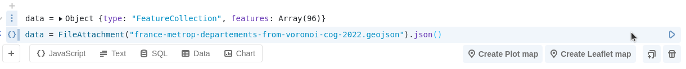
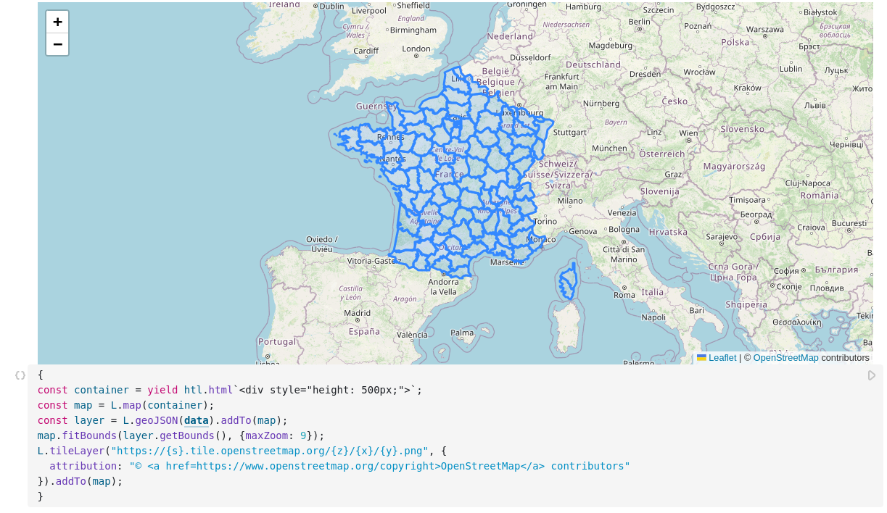
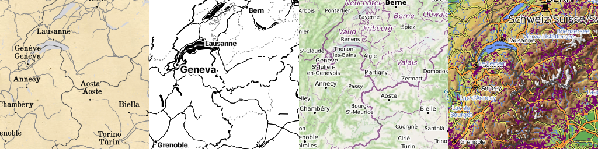
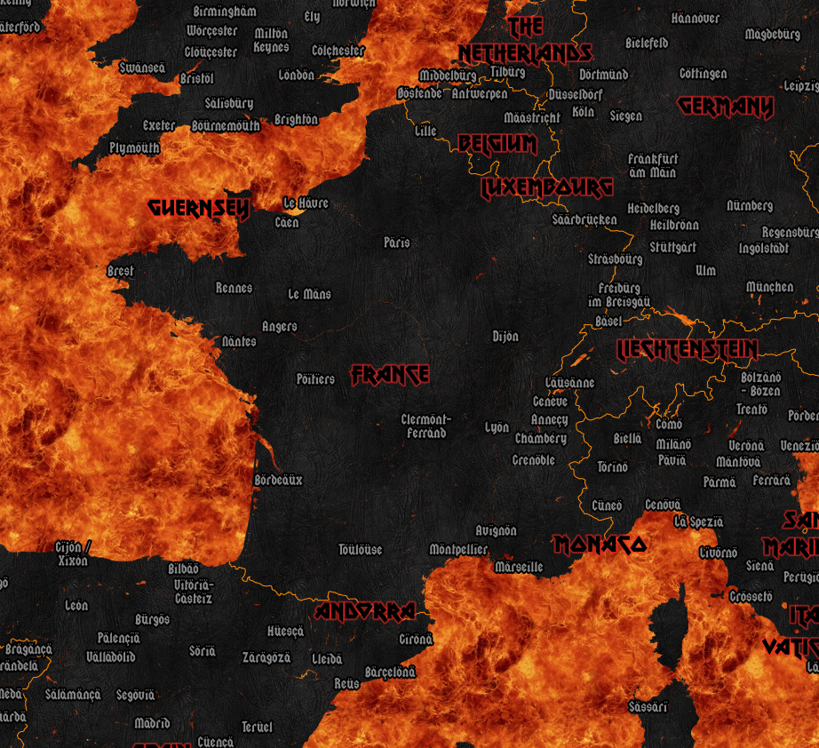
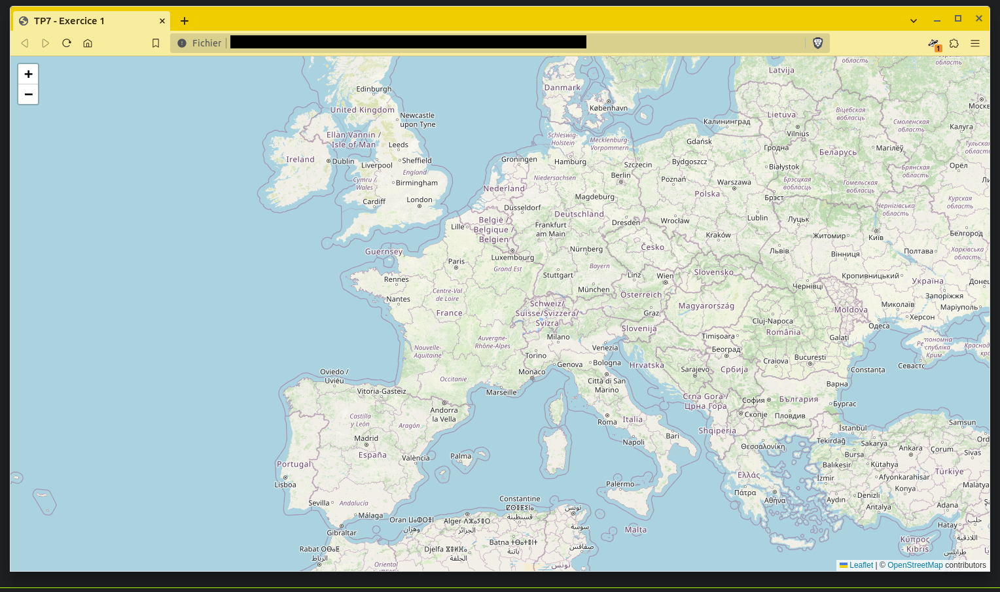
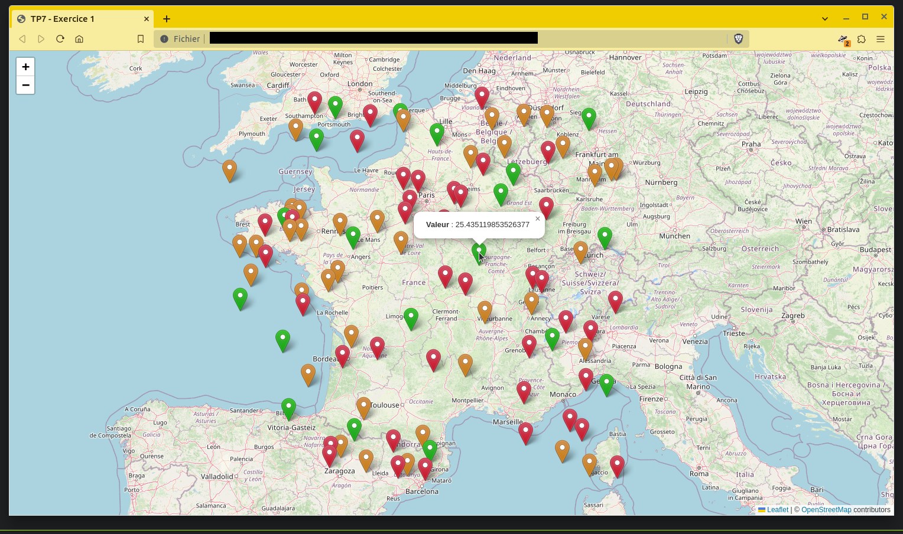
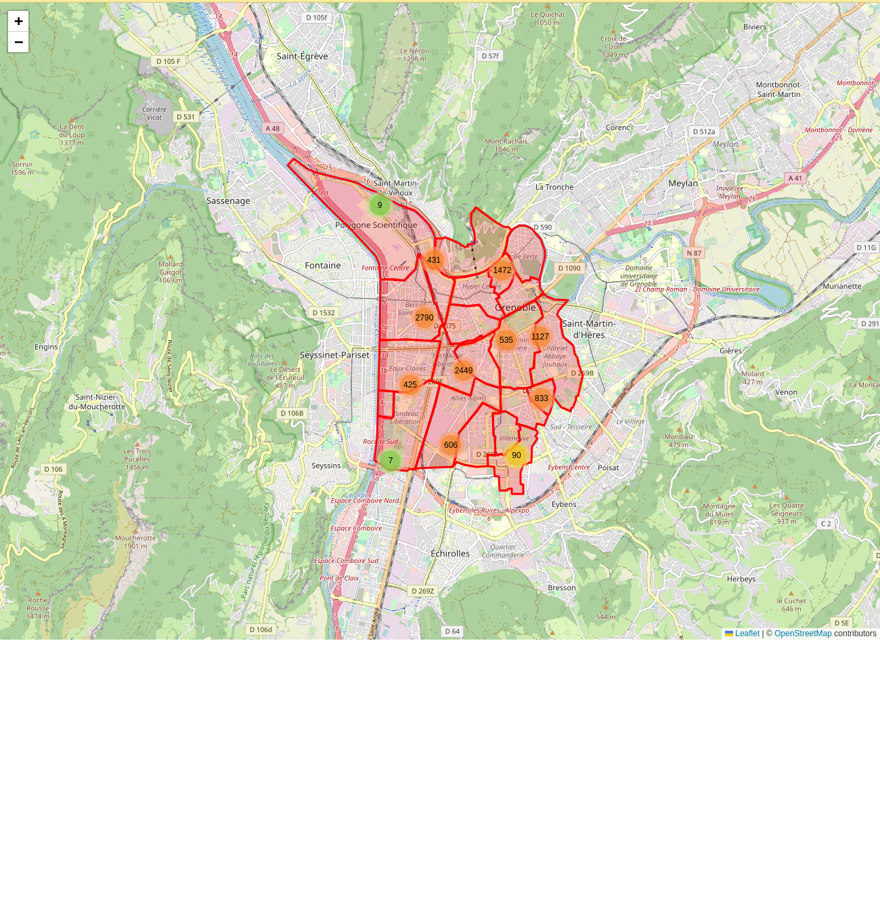
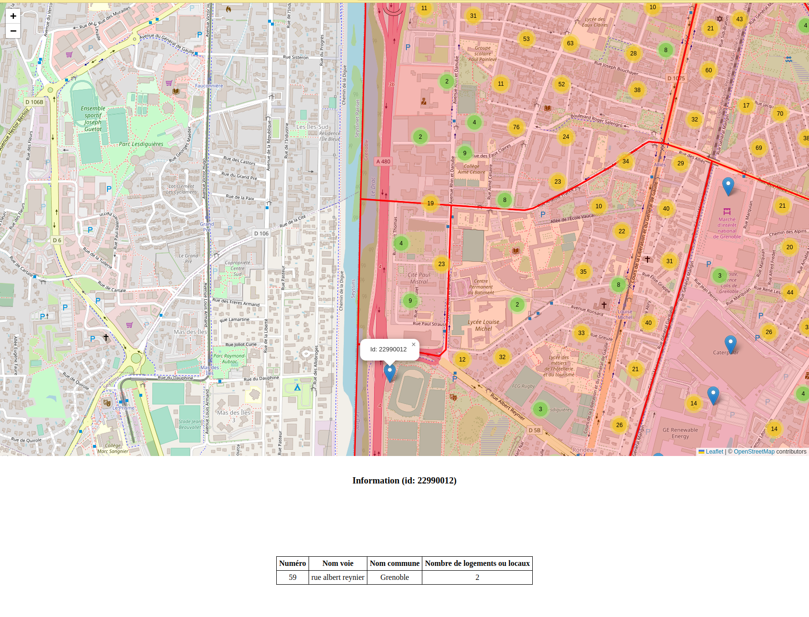

TP Séance 7 - Visualisation de données géospatiales avec Leaflet
BUT Science des données - 3ème année - Université Grenoble Alpes
Objectif du TP
L’objectif de ce TP est d’apprendre à réaliser des cartes interactives avec la bibliothèque Leaflet. Contrairement aux TP précédents, réalisés dans Observable, nous allons ici construire un fichier HTML qui sera ouvert dans un navigateur.
Cela nous permettra de voir comment inclure les bibliothèques JavaScript dans une page HTML, comment créer un conteneur pour la carte, comment charger des données géospatiales, etc.
Vous réviserez également les notions de base de HTML et CSS.
Présentation de Leaflet
Leaflet est une bibliothèque JavaScript permettant de créer des cartes interactives. Elle va permettre de choisir un fournisseur de fond de cartes, d’ajouter des données vectorielles (points, lignes, polygones), de gérer différents types d’interactions avec la carte (pan, zoom, survol du curseur, clic, sélection rectangulaire, etc., etc.).
D’autres bibliothèques similaires sont par exemple :
- OpenLayers
- MapBox GL JS
- MapLibre (un fork open source de MapBox GL JS)
Enfin, il existe des bibliothèques se destinant plus à la visualisation de grands volumes de données géospatiales avec WebGL (par exemple Deck.gl) ou se destinant à la visualisation de données géospatiales en 3D avec WebGL (par exemple Cesium).
Chargement de la bibliothèque
Il existe plusieurs manières d’inclure la bibliothèque dans votre projet (en fonction de si vous utilisez npm ou un autre gestionnaire de package, de si vous utilisez seulement un page HTML, de si vous êtes dans un notebook, etc.).
La manière la plus simple est d’inclure le fichier CSS leaflet dans la section head de votre document :
<link rel="stylesheet" href="https://unpkg.com/leaflet@1.9.4/dist/leaflet.css"
integrity="sha256-p4NxAoJBhIIN+hmNHrzRCf9tD/miZyoHS5obTRR9BMY="
crossorigin=""/>Puis d’inclure le fichier JavaScript :
<script src="https://unpkg.com/leaflet@1.9.4/dist/leaflet.js"
integrity="sha256-20nQCchB9co0qIjJZRGuk2/Z9VM+kNiyxNV1lvTlZBo="
crossorigin=""></script>Pour rappel, une page HTML est structurée de la manière suivante :
<!DOCTYPE html>
<html lang="fr">
<head>
<meta charset="UTF-8">
<title>Titre de la page</title>
<!-- Inclusion des feuilles de style externes -->
<link rel="stylesheet" href="style.css">
<!-- Par exemple pour inclure la feuille de style de la bibliothèque Leaflet -->
<link rel="stylesheet" href="https://unpkg.com/leaflet@1.9.4/dist/leaflet.css"
integrity="sha256-p4NxAoJBhIIN+hmNHrzRCf9tD/miZyoHS5obTRR9BMY="
crossorigin=""/>
<!-- Inclusion des feuilles de style au sein du même document -->
<style>
/* Ici des règles en CSS */
body {
background-color: lightblue;
}
</style>
<!-- Inclusion des scripts -->
<!-- Par exemple, pour inclure la bibliothèque Leaflet -->
<script src="https://unpkg.com/leaflet@1.9.4/dist/leaflet.js"
integrity="sha256-20nQCchB9co0qIjJZRGuk2/Z9VM+kNiyxNV1lvTlZBo="
crossorigin=""></script>
<!--
Inclusion de scripts personnels
(veillez à les inclure après les bibliothèques externes si vous les utilisez par la suite)
-->
<script src="script.js"></script>
</head>
<body>
<!-- Contenu de la page -->
<!-- On peut aussi inclure des scripts ici, dans body, avant ou après le contenu -->
</body>
</html>Si vous utilisez Leaflet dans Observable, vous n’avez pas à inclure ces deux fichiers, ils ont déjà été chargés par défaut. Il est par ailleurs possible, dans Observable, de créer automatiquement une carte avec Leaflet ou Plot depuis l’interface graphique :

1. Ajout d’un fichier GeoJSON puis clic sur “Create Leaflet Map”

2. Carte et code obtenus
Rappels sur les balises HTML
Comme vous le savez ou avez pu le constater juste au-dessus, une page HTML est structurée en balises imbriquées les unes dans les autres.
Une balise HTML est constituée d’un nom, éventuellement d’attributs, et d’un contenu. Par exemple :
- la balise
div(pour division) est une balise qui permet de créer un conteneur “en bloc” générique, - la balise
spanest une balise qui permet de créer un conteneur “en ligne” générique,
Les autres balises fréquemment rencontrées sont : p (paragraphe - élément en bloc), a (ancre, pour faire un lien hypertexte - élément en ligne), i, em, b et strong (italique pour les deux premiers, gras pour les deux seconds), ul et ol (listes non-ordonnées et ordonnées), li (élément de liste), table (tableau), tr (ligne de tableau), td (cellule de tableau), th (cellule d’en-tête de tableau), img (image), br (saut de ligne), hr (ligne horizontale), input (élément de saisie), button (bouton), select (liste déroulante), option (option d’une liste déroulante), form (formulaire), label (étiquette), textarea (zone de texte), svg (élément SVG), etc.
Les balises peuvent avoir des attributs (comme id ou class) et un contenu (qui peut être du texte ou d’autres balises).
<!-- Balise vide -->
<br /> <!-- un saut de ligne -->
<hr /> <!-- une ligne horizontale -->
<!-- Balise avec un contenu -->
<p>Un paragraphe</p>
<!-- Balise avec des attributs et un contenu -->
<a href="https://www.w3.org/">Un lien vers le site du W3C</a>
<div class="ma-classe">Un div avec une classe</div>
<div id="mon-id">Un div avec un identifiant</div>
<div style="background-color: lightblue;">Une div avec un style inline</div>
<!-- Balises imbriquées -->
<div>
<p>Un paragraphe dans une div</p>
<p>Un autre <i>paragraphe</i> dans une div</p>
</div>
<ul>
<li>Premier item de la liste</li>
<li>Deuxième item de la liste</li>
<li>Troisième item de la liste</li>
</ul>Rappels sur les sélecteurs CSS
Les sélecteurs CSS permettent de sélectionner des éléments HTML pour leur appliquer des règles de style.
Par exemple, pour sélectionner tous les paragraphes (p) dans une page HTML, on peut utiliser le sélecteur p :
p {
color: red;
}Pour sélectionner tous les éléments ayant la classe ma-classe, on peut utiliser le sélecteur .ma-classe :
.ma-classe {
color: red;
}Pour sélectionner tous les éléments ayant l’identifiant mon-id, on peut utiliser le sélecteur #mon-id :
#mon-id {
color: red;
}On peut combiner ces notations, par exemple pour sélectionner toutes les paragraphes ayant la classe label :
p.label {
font-style: italic;
font-family: "Helvetica Neue", Arial, Helvetica, sans-serif;
}Enfin, il est également possible de sélectionner des éléments en fonction de leur position dans l’arbre HTML, par exemple pour sélectionner tous les paragraphes qui sont des enfants directs d’une div ayant la classe container :
div.container > p {
color: red;
}Ou pour sélectionner tous les éléments span qui sont des enfants (directs ou non) d’une div ayant la classe container :
div.container span {
color: red;
}La spécification CSS permet de nombreuses autres possibilités de sélection, que nous ne détaillerons pas ici (sélection d’un premier élément ou du dernier élément d’un élément parent, sélection d’un élement sur deux, sélection d’un élément en fonction de la valeur d’un attribut, etc.).
Par ailleurs les possibilités offertes par le langage CSS sont très nombreuses. Voir par exemple :
- la page CSS Zen Garden qui montre comment il est possible d’appliquer des styles complètement différents à un même contenu,
- la page CSS Tricks qui propose de nombreux tutoriels et astuces,
- le site CodePen qui permet de tester du code HTML, CSS et JavaScript en direct (et qui propose de nombreux exemples de code CSS complexes).
L’exemple suivant est tiré de CodePen et montre une animation en 3D réalisée uniquement avec du CSS (il y a un peu de code JavaScript mais celui-ci sert essentiellement à gérer les interactions avec les boutons situés à droite de la page).
Pour en savoir plus sur le CSS
- Sur MDN : https://developer.mozilla.org/fr/docs/Web/CSS
- Sur W3Schools : https://www.w3schools.com/css/default.asp
Retour à Leaflet : Création d’un conteneur pour la carte
Il est nécessaire de créer un conteneur pour la carte, à l’endroit que vous souhaitez dans votre page HTML. C’est généralement une div qui est utilisée (mais n’importe quel élément HTML en bloc fait l’affaire). On lui donne généralement un identifiant (ici map) qui nous permettra de l’identifier depuis le code JavaScript qui instanciera la carte.
<div id="map"></div>Il faut également définir la taille de ce conteneur, par exemple avec du CSS :
#map {
width: 100%;
height: 600px;
}Il est ensuite nécessaire d’écrire le code JavaScript qui va instancier la carte et l’ajouter au conteneur (attention à penser à inclure ce code: 1. après le chargement de la bibliothèque Leaflet, 2. dans une fonction qui sera exécutée lorsque la page sera chargée).
// On crée une carte
const map = L.map('map'); // On passe l'identifiant du conteneur
// On ajoute un fond de carte
L.tileLayer("https://{s}.tile.openstreetmap.org/{z}/{x}/{y}.png", {
attribution: "© <a href=https://www.openstreetmap.org/copyright>OpenStreetMap</a> contributors"
}).addTo(map);
// On définit le centre de la zone à afficher et le niveau de zoom
map.setView([45.1885, 5.7245], 13);Résultat
Nous n’avons affiché ici que le fond de carte. En visualisation de données sur le Web il est généralement nécessaire d’ajouter des données vectorielles (points, lignes, polygones) pour représenter les données.
Chargement de données géospatiales
Il existe de nombreux formats de données géospatiales. Un des plus répandus sur le Web et que vous avez déjà du manipuler est le format GeoJSON.
Il est possible de charger des données GeoJSON dans Leaflet avec la méthode L.geoJSON :
// On dispose déjà d'une variable `map` qui contient la carte
// On charge les données
fetch('https://gist.githubusercontent.com/mthh/4ad093d3b33c2177f1e6c1ea1cde5d9b/raw/b6a60fc2ee66093f009114331f8a4230665d6a30/UNIONS_DE_QUARTIER_EPSG4326.json')
.then(response => response.json())
.then(data => {
// On crée une couche Leaflet à partir des données GeoJSON
const layer = L.geoJSON(data);
// On ajoute la couche à la carte
layer.addTo(map);
// On ajuste le zoom pour que toutes les données soient visibles
map.fitBounds(layer.getBounds());
});Si nous sommes dans une fonction asynchrone, nous pouvons utiliser le mot-clé await. Cela peut vous aider à simplifier le code si vous n’êtes pas à l’aise avec les promesses.
// On dispose déjà d'une variable `map` qui contient la carte
// On charge les données
const response = await fetch('https://gist.githubusercontent.com/mthh/4ad093d3b33c2177f1e6c1ea1cde5d9b/raw/b6a60fc2ee66093f009114331f8a4230665d6a30/UNIONS_DE_QUARTIER_EPSG4326.json');
const data = await response.json();
// On crée une couche Leaflet à partir des données GeoJSON,
// ici en choisissant le style
const layer = L.geoJSON(data, {
style: {
color: 'red',
opacity: 0.5,
},
});
// On ajoute la couche à la carte
layer.addTo(map);
// On ajuste le zoom pour que toutes les données soient visibles
map.fitBounds(layer.getBounds());Ce code est similaire à celui du snippet précédent, à l’exception de l’utilisation du mot-clé await qui permet d’attendre la résolution de la promesse avant de continuer l’exécution du code.
On vient de voir qu’il est possible de créer une couche Leaflet à partir de données GeoJSON en utilisant la fonction L.geoJSON.
Cette fonction accepte en second argument un objet d’options permettant de personnaliser la création de la couche. Il est par exemple possible de personnaliser le style des géométries (pour les polygones, lignes, etc.) en utilisant l’option style, de personnaliser la création des marqueurs (pour les points) en utilisant l’option pointToLayer, et d’ajouter des écouteurs d’événements sur chaque entité géographique en utilisant l’option onEachFeature.
L’ensemble des options disponibles est documenté sur la page officielle de Leaflet : https://leafletjs.com/examples/geojson/.
Exemple, avec un style personnalisé pour les polygones et un écouteur d’événement sur chaque entité géographique pour afficher une popup lors du clic :
const layer = L.geoJSON(data, {
style: {
color: 'blue',
opacity: 0.5,
},
onEachFeature: (feature, layer) => {
// Admettons que nos entités aient une propriété "id", on affiche ici
// une infobox affichant cette propriété
layer.bindPopup(`<b>ID :</b> ${feature.properties.id}`);
},
});Résultat
Affichage d’épingles et de popups
Un usage très courant de Leaflet est d’afficher des épingles sur la carte pour indiquer des points d’intérêt. Il va facilement être possible d’afficher des popups au clic sur ces épingles.
// On dispose déjà d'une variable `map` qui contient la carte
const marker = L.marker([45.1885, 5.7245]);
marker.addTo(map);
const circle = L.circle([45.1673, 5.7373], {
color: 'green',
radius: 100,
});
circle.addTo(map);
// Ajout d'un popup
marker.bindPopup('Hello, Marker!');
circle.bindPopup('Hello, Circle!');Il est également possible d’afficher des popups au survol du curseur :
// On dispose déjà d'une variable `map` qui contient la carte
const marker = L.marker([45.2031, 5.7189]);
marker.addTo(map);
// Ajout d'un popup
marker.bindPopup('Je m\'ouvre au survol de la souris !');
marker.on('mouseover', () => marker.openPopup());
marker.on('mouseout', () => marker.closePopup());Résultat
Différence entre cartographie “statique” et “interactive”
Les cartes qui peuvent être produites avec Plot (comme vu dans le TP “Bibliothèque Plot (partie 1)) sont des cartes statiques (en fonction des modes de représentation choisis on parlera aussi souvent de “cartes thématiques” ou de “cartes statistiques”). Cela signifie que l’utilisateur ne peut pas interagir avec la carte, il ne peut que la visualiser.
La cartographie interactive permet de faire interagir l’utilisateur avec la carte : il va être capable de zoomer, de se déplacer (pan en anglais), de cliquer sur des éléments, etc. Cela peut nécessiter de nouveaux modes de représentation des données, par exemple pour représenter des données en fonction du niveau de zoom, pour agréger les données sous forme de cluster, pour permettre à l’utilisateur de connaître les informations associées à un élément de la carte, etc.

Par ailleurs, la cartographie interactive sur le Web a souvent recours à des fonds de cartes tuilés (plus ou moins riches en détails et avec des styles variés) en provenance de fournisseurs tiers (OpenStreetMap, Google Maps, MapBox, etc.).


Exercice 1 : Carte interactive avec Leaflet
L’objectif de cet exercice est de créer une carte interactive avec Leaflet.
Partie 1 : Création de la carte
- Créez un fichier
exercice1.htmlet un fichierscript-exercice1.js. - Importer leaflet (CSS et JavaScript) ainsi que le fichier
script-exercice1.jsdans le fichier HTML. - Écrivez :
- le code HTML permettant de créer un conteneur pour la carte,
- le code JavaScript permettant d’instancier la carte (veillez à ajouter un fond de carte tuilé dès maintenant) dans le fichier JavaScript,
- le code CSS permettant de définir la taille du conteneur de la carte : celui-ci doit occuper toute la largeur et toute la hauteur de la page.

Partie 2 : Création de markers et de popups
Ci-joint une liste de points d’intérêt à afficher sur la carte :
const points = [
{"latitude":48.00437060928802,"longitude":3.405187984560979,"value":92.23933026058458},
{"latitude":44.463307782881934,"longitude":2.5867921967706105,"value":78.59774966580932},
{"latitude":46.701360118007614,"longitude":-4.203438300412598,"value":43.30792363015428},
{"latitude":48.06995454268257,"longitude":2.9843755928045974,"value":69.75382042731478},
{"latitude":41.73849513342013,"longitude":0.09524315874835665,"value":42.34848301924781},
{"latitude":47.5131048425846,"longitude":1.3759605086441091,"value":65.13901308010112},
{"latitude":48.27480094773302,"longitude":1.5415705159709354,"value":76.69398811189502},
{"latitude":49.04183370083771,"longitude":2.0131437190407855,"value":99.75806820665699},
{"latitude":45.73365334672548,"longitude":4.509047183911503,"value":49.39182573091858},
{"latitude":41.56944827203337,"longitude":1.2824369841638328,"value":98.8118003058305},
{"latitude":50.28025539589674,"longitude":-2.5204876565287906,"value":33.777649042471914},
{"latitude":50.04283122112549,"longitude":-1.7658824325843097,"value":22.348104425941106},
{"latitude":50.63019093091029,"longitude":5.955827423893109,"value":50.041803065894655},
{"latitude":50.809542049709066,"longitude":-1.0519506280225759,"value":13.303012538593073},
{"latitude":44.759611774817465,"longitude":8.241677659885802,"value":52.730646258111236},
{"latitude":42.14041661862867,"longitude":-0.8466411995457843,"value":61.63346482605998},
{"latitude":45.556856299199055,"longitude":1.7522494113772655,"value":16.73165840302704},
{"latitude":47.63444578836868,"longitude":-0.40224418700704234,"value":6.902395475369105},
{"latitude":43.604840774530444,"longitude":5.95782358092385,"value":75.69673343311065},
{"latitude":46.002160655169575,"longitude":9.359492147779932,"value":94.2702706591928},
{"latitude":41.869003589884436,"longitude":-1.2802888695794739,"value":95.2801673714837},
{"latitude":45.1080605850212,"longitude":-0.45234191130153434,"value":51.73082356043059},
{"latitude":48.54857370885016,"longitude":1.7114593757958412,"value":87.32096049949669},
{"latitude":44.57759194158374,"longitude":-0.7839355503934682,"value":99.80646228576471},
{"latitude":42.48443600589425,"longitude":6.019292339960644,"value":78.37483977153656},
{"latitude":42.60198736310705,"longitude":8.116480723726443,"value":66.25562229170268},
{"latitude":49.73466522334483,"longitude":6.84746537289261,"value":96.27957332154588},
{"latitude":47.83480704252232,"longitude":-2.745650502291979,"value":50.169730353307784},
{"latitude":46.21512871086712,"longitude":-2.300736925259019,"value":53.2481339356941},
{"latitude":45.02797280582468,"longitude":7.018468421305442,"value":11.149581436133339},
{"latitude":50.54459158166243,"longitude":4.777331391551614,"value":36.37465244653624},
{"latitude":47.96646869174493,"longitude":-3.6750860883761627,"value":82.54139905132811},
{"latitude":48.19889401847914,"longitude":-2.748243099974136,"value":44.54208502616732},
{"latitude":49.18305491665355,"longitude":8.58129751703601,"value":52.811224974824135},
{"latitude":42.428388231599435,"longitude":2.2081712468493713,"value":39.87227700369287},
{"latitude":48.767901025926975,"longitude":3.3675651108011673,"value":92.36195957310247},
{"latitude":49.46087504501311,"longitude":4.444836603405148,"value":98.91746712178988},
{"latitude":43.95537474837441,"longitude":8.25719417920605,"value":86.41568950094754},
{"latitude":46.07404357424273,"longitude":-4.5995135972665055,"value":32.26512855436787},
{"latitude":48.679162231135216,"longitude":3.6007153060206045,"value":93.34158555286103},
{"latitude":47.266094787298535,"longitude":8.055574091658201,"value":41.1033164478011},
{"latitude":45.49807875479245,"longitude":7.518082870711052,"value":72.49838154223822},
{"latitude":47.969680565487835,"longitude":-0.8713047702640733,"value":33.98535164114689},
{"latitude":47.431616715860365,"longitude":-4.613929658904625,"value":50.64590085936243},
{"latitude":41.514760853194815,"longitude":2.285139281037278,"value":89.68834138037607},
{"latitude":46.56277459901562,"longitude":-1.3184048033881233,"value":33.400280682161146},
{"latitude":46.5316977344798,"longitude":6.603077148212063,"value":72.0113752609356},
{"latitude":48.29954528284932,"longitude":-2.3863072660138696,"value":64.53094764875222},
{"latitude":50.91688820075097,"longitude":-1.8342393474682077,"value":72.95221657545406},
{"latitude":41.63495049806509,"longitude":1.6269678922727104,"value":60.558472875675264},
{"latitude":48.71181524949577,"longitude":5.0903550879247055,"value":19.438782471998707},
{"latitude":49.87744549421906,"longitude":5.230083842017458,"value":47.323728454689395},
{"latitude":43.79607186816448,"longitude":9.03513208547697,"value":7.984347750004095},
{"latitude":50.60528678874444,"longitude":0.24209221800012326,"value":85.64259358587825},
{"latitude":50.01321909828898,"longitude":-0.23700944427613369,"value":92.35686482899119},
{"latitude":48.36372866930204,"longitude":6.778863311345785,"value":73.70427600933832},
{"latitude":41.63022408790834,"longitude":8.389941106538636,"value":51.005368006226504},
{"latitude":41.57650161768758,"longitude":9.433710257487771,"value":72.50846938530762},
{"latitude":46.63836538999862,"longitude":6.283146871291595,"value":89.57409452155638},
{"latitude":50.644305399960444,"longitude":1.3723843448788715,"value":30.123756037195815},
{"latitude":50.49617922119971,"longitude":1.4829072337520204,"value":41.95864161331395},
{"latitude":44.06713285045802,"longitude":-2.0750725846461107,"value":39.03465413141449},
{"latitude":42.004837157200875,"longitude":2.4709605423322545,"value":1.6057082848583093},
{"latitude":44.843053335216204,"longitude":6.155960869148214,"value":83.26243524621071},
{"latitude":50.59541470550611,"longitude":6.813655963218163,"value":55.47643509191145},
{"latitude":48.109448920624054,"longitude":-2.937552742927649,"value":6.694287348602335},
{"latitude":46.46951788080611,"longitude":3.769992632761906,"value":95.11842643973142},
{"latitude":42.85539608851279,"longitude":7.663502275531511,"value":72.81715035933401},
{"latitude":46.64295606637092,"longitude":3.026217599936328,"value":90.53437573839017},
{"latitude":49.104242123946804,"longitude":1.4644361383473088,"value":78.38285495339304},
{"latitude":45.966573558689234,"longitude":6.244733093756412,"value":45.010766988063125},
{"latitude":48.04756186923966,"longitude":0.49753046080660557,"value":40.809650976483795},
{"latitude":47.1720371306031,"longitude":-3.6394494864748514,"value":67.05264046083512},
{"latitude":47.84275126525832,"longitude":-2.3233366820057477,"value":36.036798691745545},
{"latitude":47.430993231382885,"longitude":-4.007409918464976,"value":63.13549493741286},
{"latitude":42.297505161919844,"longitude":1.0880004632343923,"value":97.46177848824912},
{"latitude":51.03289119651886,"longitude":4.4007045353275815,"value":85.18369801298708},
{"latitude":43.178360461068245,"longitude":-0.009674080605641677,"value":42.944371900740364},
{"latitude":49.20587571878736,"longitude":5.55464419664852,"value":17.77257142847848},
{"latitude":42.122136495152866,"longitude":-1.2355788150693159,"value":78.44912528713368},
{"latitude":44.337872682975195,"longitude":3.7900019533661,"value":62.72653881661314},
{"latitude":49.28765986966627,"longitude":-4.984572140202957,"value":55.454115542254634},
{"latitude":49.87062696418933,"longitude":7.415757701119513,"value":56.0506289149177},
{"latitude":41.99264374695782,"longitude":7.391627348898672,"value":33.81696479960035},
{"latitude":50.52538329252816,"longitude":8.380066077678489,"value":5.265642257243974},
{"latitude":48.33537921772958,"longitude":-2.658881052479613,"value":33.13221190392888},
{"latitude":45.23568718489072,"longitude":8.446979452411746,"value":88.76351607709296},
{"latitude":43.14395880940174,"longitude":-2.781095276519064,"value":15.820755735291424},
{"latitude":49.635433559883246,"longitude":3.9729266229413254,"value":39.24223351995748},
{"latitude":42.604919737160785,"longitude":-0.352301384476597,"value":31.99633524706693},
{"latitude":47.23421475240264,"longitude":4.288401250312162,"value":25.435119853526377},
{"latitude":49.32378149019271,"longitude":9.204959065600708,"value":48.53810466010362},
{"latitude":44.79617633536024,"longitude":0.5052328945724387,"value":78.0750273964333},
{"latitude":47.62248657471929,"longitude":8.964901395861006,"value":9.099582137317718},
{"latitude":44.98601257661349,"longitude":-3.011559799044299,"value":8.417443213093279},
{"latitude":46.78555138978771,"longitude":-0.9580818337470696,"value":43.29107594150834},
{"latitude":48.06471866986791,"longitude":-2.648041608657923,"value":69.0894624195032},
{"latitude":50.16178092012635,"longitude":2.7209265750118803,"value":4.145746145562623},
{"latitude":49.3415677365672,"longitude":9.38684509906168,"value":40.08902664621343},
{"latitude":45.93740084771017,"longitude":-2.2680835197324423,"value":85.57974779137525}
];Copiez cette variable dans votre fichier
script-exercice1.js.Affichez un marqueur pour chacun des points d’intérêt. Ce marqueur doit être d’une couleur différente en fonction de la valeur associée au point d’intérêt (inspirez-vous de l’exemple fourni ici pour créer des marqueurs colorés) :
- marqueur rouge si la valeur est inférieure à 33,
- marqueur orange si la valeur est comprise entre 33 et 66,
- marqueur vert si la valeur est supérieure à 66.
Vous ajouterez également un popup à chaque marqueur qui affiche la valeur associée au point d’intérêt lorsque l’utilisateur clique sur le marqueur.
Veillez à ce que la carte soit centrée et zoomée afin que tous les marqueurs soient visibles lors de l’ouverture de la page.

La correction de l’exercice 1 est disponible à l’URL suivante : ./data/TP7-exercice1.zip
Exercice 2 : Chargement de données vectorielles et clustering
L’objectif de cet exercice est de charger des données vectorielles volumineuses (plusieurs milliers de points sur une zone restreinte) et de les afficher sur une carte interactive.
Partie 1 : Création de la carte
Comme dans l’exercice précédent :
- Créez un fichier
exercice2.htmlet un fichierscript-exercice2.js. - Importer leaflet (CSS et JavaScript) ainsi que le fichier
script-exercice2.jsdans le fichier HTML. - Importer également les fichiers CSS
https://unpkg.com/leaflet.markercluster@1.4.1/dist/MarkerCluster.cssethttps://unpkg.com/leaflet.markercluster@1.4.1/dist/MarkerCluster.Default.css. - Importer également le fichier JavaScript
https://unpkg.com/leaflet.markercluster@1.4.1/dist/leaflet.markercluster.js. - Écrivez :
- le code HTML permettant de créer un conteneur pour la carte,
- le code JavaScript permettant d’instancier la carte (veillez à ajouter un fond de carte tuilé dès maintenant) dans le fichier JavaScript,
- le code CSS permettant de définir la taille du conteneur de la carte : celui-ci doit occuper toute la largeur de la page et 60% de sa hauteur.
- Créez un second conteneur qui viendra se placer sous la carte et qui servira à afficher des informations sur l’élément sélectionné par l’utilisateur sur la carte (voir plus bas).
Partie 2 : Chargement et visualisation des données
- Chargez le fichier UNIONS_DE_QUARTIER_EPSG4326.json (il s’agit d’un fichier au format GeoJSON contenant des géométries de type Polygon - Source)
- Chargez le fichier base_imb_38_grenoble.geojson (il s’agit d’un fichier au format GeoJSON contenant des géométries de type Point - Source).
- Créez une couche Leaflet (avec
L.geoJSON) pour le fichierUNIONS_DE_QUARTIER_EPSG4326.jsonet ajoutez-la à la carte. - Créez une couche Leaflet de cluster de marker en vous aidant des instructions présentes ici.
- Ajustez le zoom de la carte pour que toutes les données soient visibles lors de l’ouverture de la page.

Partie 3 : Interaction avec les données
- Écoutez l’événement “clic” sur chacun des marqueurs de la couche de cluster. Lorsque le clic se produit, affichez les informations concernant le point dans la
divajoutée précédemment sous la carte (cf. exemple en screenshot ci-dessous) en utilisant les variablesimb_id,addr_nom_commune,addr_nom_voie,addr_numeroetimb_nbr_loglocprésentes dans les données. - Écoutez l’événement “clic” sur la carte. Lorsque le clic se produit, effacez le contenu de la
divajoutée précédemment sous la carte. - Prenez le temps de vous renseigner sur la manière de personnaliser, en CSS, le style du tableau, comme dans le screenshot ci-dessous (padding dans les cellules, centrage du texte, etc.).

Partie 4 : Pour aller plus loin
- Ajoutez un fond de carte tuilé plus adapté à la visualisation des données, par exemple un fond de carte en noir et blanc - vous pouvez aller sur la page https://leaflet-extras.github.io/leaflet-providers/preview/ pour en choisir un qui vous plait - faites attention à ne pas en choisir un qui nécessite un clé (API key) pour fonctionner.
La correction de l’exercice 2 est disponible à l’URL suivante : ./data/TP7-exercice2.zip